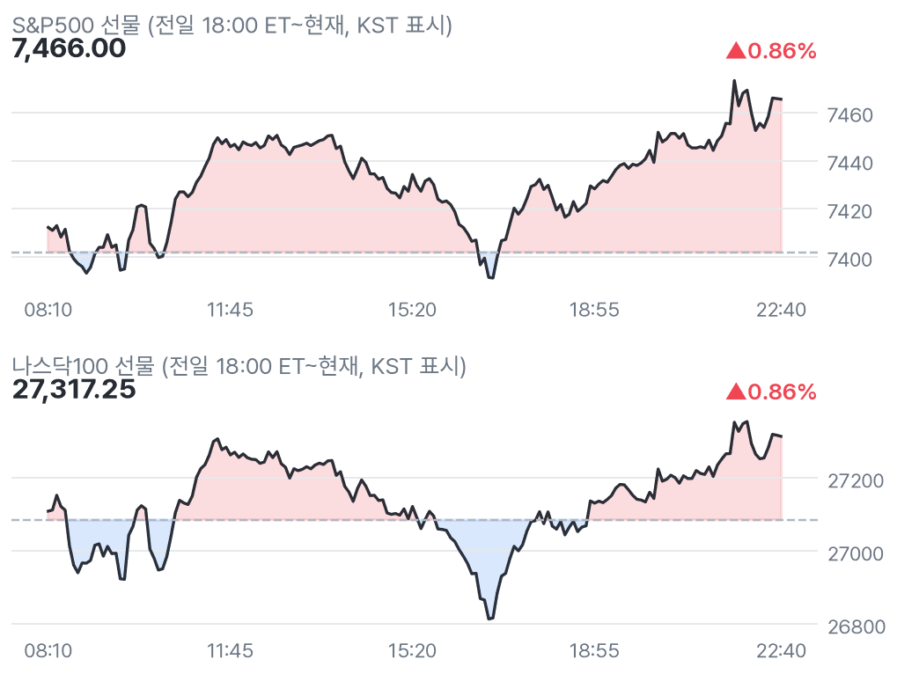
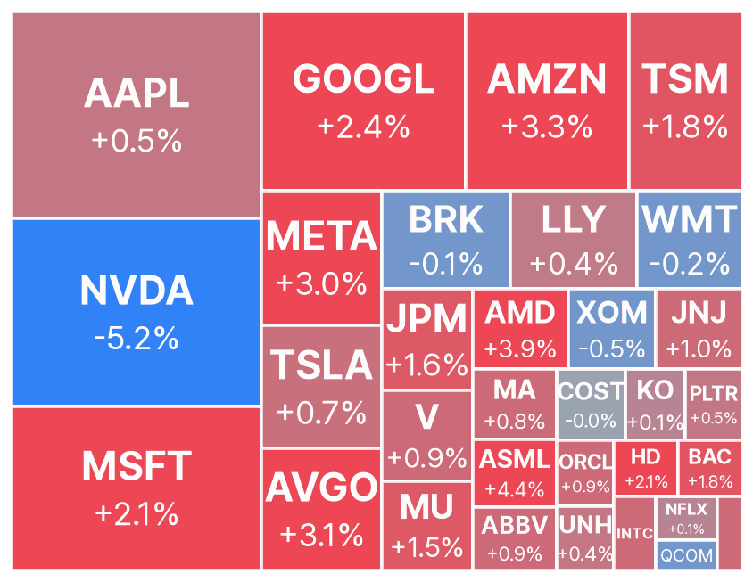
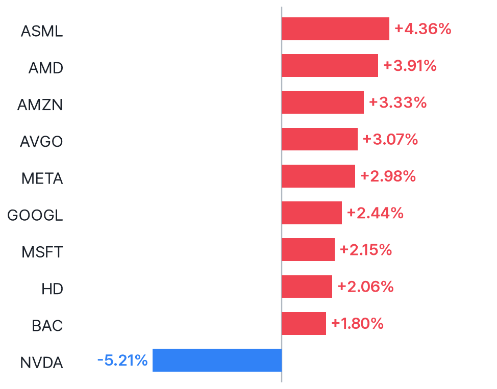
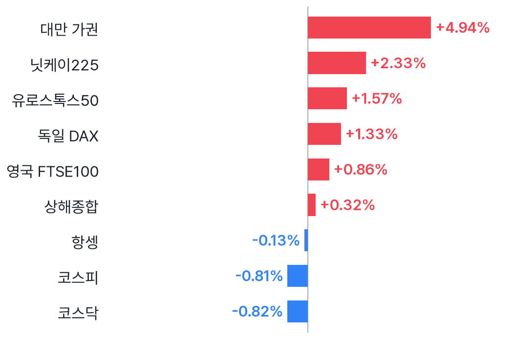
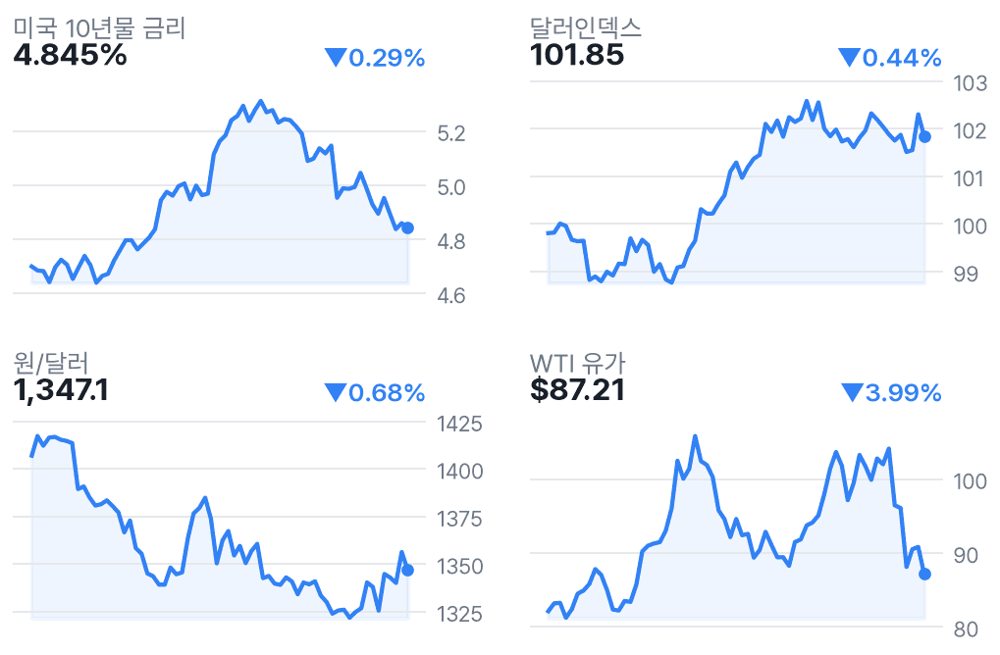

다우 선물 1.23%↑, 유가 급락 속 엔비디아 역행
✅ 핵심 요약
- 다우 선물 +1.23%·나스닥100 +0.86%, 유가 하락 속 동반 반등.
- 엔비디아 -5.21%, CEO 관련 의혹 조사 보도에 지수와 반대 흐름.
- AMD +3.91%, Oppenheimer 의견 상향·목표가 $600 제시.
- WTI -3.99%·원/달러 1,347.1원; 08:30 ET 지표 실측은 미확인.
📊 주요 지표
S&P500 선물
7,466.00
▲0.86%
나스닥100 선물
27,317.25
▲0.86%
다우 선물
52,017
▲1.23%
러셀 선물
2,800.20
▲1.44%
VIX
23.03
▼10.18%
미국 10년물
4.845%
▼0.29%
달러인덱스
101.85
▼0.44%
원/달러
1,347.1
▼0.68%
WTI
$87.21
▼3.99%
금
$4,133
▲1.42%
비트코인
$74,724
▲0.19%
유로스톡스50
6,267.61
▲1.57%
🧭 시장 해석
CNBC 수집 헤드라인은 유가 하락을 선물 반등 배경으로 꼽았다. 다우 +1.23%, 러셀 +1.44%가 나스닥100 +0.86%보다 강하다. WTI -3.99%는 물가 부담 완화 기대를 뒷받침할 수 있지만, 하락 원인 자체는 추가 확인이 필요하다.
엔비디아는 CEO 관련 의혹 조사 보도 속 -5.21%다. AMD +3.91%, ASML +4.36%와 갈려 반도체 전체 악재로 단정하기 어렵다. 원/달러 1,347.1원은 국내장 환율 부담 완화 요인이지만, 엔비디아 약세의 공급망 전이는 지켜봐야 한다.
반도체는 업종 방향보다 종목 차별화
엔비디아 관련 보도는 조사 대상 의혹이지 확정된 위법 사실이 아니다. AMD의 Oppenheimer 의견 상향은 프리마켓 강세와 함께 관찰되는 개별 재료다. 경쟁사로의 자금 이동은 가능한 해석이지 확인된 수급 사실은 아니다. 개장 후 엔비디아 약세가 다른 반도체로 번지는지가 핵심이다.
경제지표 공백: 발표 없음으로 해석 금지
수집 달력이 비어 있고 추가 검색도 접근 제한·무관한 결과로 교차검증에 실패했다. 08:30 ET 고영향 지표의 발표 여부와 실측·예상치 비교는 확인되지 않았다. 지표 서프라이즈를 선물 상승 원인으로 붙이지 않았으며, CPI의 정확한 발표 일정도 확정하지 않았다.
📈 차트
미국 지수 선물 야간 흐름

점선 = 전일 정산가
빅테크·대형주 프리마켓 히트맵

전일 종가 대비 프리마켓 현재가 · 타일 크기 = 시가총액
프리마켓 변동 상위 10 (대형주)

변동폭 절대값 기준
유럽(장중) · 아시아(마감) 증시

현지 기준 전일 대비
금리·달러·원화·유가 (3개월)

우측 상단 = 전일 대비
🏦 애널리스트 · 리서치
- AMD — Oppenheimer, Perform→Outperform·목표가 $600 제시기존보다 긍정적인 의견으로 변경. 수집값의 이전 목표가 0은 실제 목표가로 해석하지 않았다.
- PDD — Morgan Stanley 의견 하향 보도수집 헤드라인 기준. 변경 전후 등급과 목표가 수치는 확인되지 않아 생략했다.
- Rollins — Citigroup 의견 상향 보도수집 헤드라인 기준. 구체적 등급·목표가 및 주가 상승률은 미확인이다.
미국 대형주 의견·목표가 변경 1건 (Yahoo)
- 의견 상향AMD · OppenheimerPerform → Outperform · 목표가 $600 · 11/09 19:17 KST
📰 주요 뉴스
-
유가와 주가지수의 반대 방향 움직임이 핵심이다.CNBC
-
지수 반등과 별개인 기업 고유 리스크다.CNBC
-
실적 예상 상회만큼 향후 전망의 질이 중요하다.MarketWatch
미국·글로벌 헤드라인 18건
-
CNBC Markets · 11/09 22:49
-
CNBC · 11/09 22:46
-
CNBC · 11/09 22:44
-
MarketWatch · 11/09 22:36
-
WSJ Markets · 11/09 22:32
-
MarketWatch · 11/09 22:30
-
MarketWatch · 11/09 22:30
-
CNBC · 11/09 22:27
-
CNBC · 11/09 22:25
-
CNBC · 11/09 22:22
-
WSJ Markets · 11/09 22:20
-
CNBC · 11/09 22:13
-
Yahoo Finance · 11/09 22:12
-
Yahoo Finance · 11/09 22:09
-
WSJ Markets · 11/09 22:05
-
CNBC · 11/09 22:00
-
The New York Times · 11/09 21:51
-
WSJ Markets · 11/09 21:45
애널리스트 관련 헤드라인 12건
-
Benzinga · 11/09 22:19
-
Benzinga · 11/09 21:52
-
Quantisnow · 11/09 21:43
-
Quantisnow · 11/09 21:43
-
Quantisnow · 11/09 21:38
-
Quantisnow · 11/09 21:38
-
Quantisnow · 11/09 21:38
-
Quantisnow · 11/09 21:37
-
Quantisnow · 11/09 21:33
-
Quantisnow · 11/09 21:32
-
Benzinga · 11/09 21:25
-
Benzinga · 11/09 21:20
국내 헤드라인 8건
-
뉴스핌 · 11/09 21:51
-
Investing.com 한국어 · 11/09 21:21
-
톱스타뉴스 · 11/09 20:12
-
팍스경제TV · 11/09 17:41
-
머니투데이 · 11/09 17:41
-
주간한국 · 11/09 17:17
-
MBC 뉴스 · 11/09 16:07
-
서울파이낸스 · 11/09 16:05
🗓️ 일정
오늘 미국 실적 발표 (장전=발표 완료 · 장후=새벽)
- CEG Constellation Energy Corporation장전시총 $88.6B · EPS 예상 $3.90 · 시간외 ▲2.53%
- KKR KKR & Co. Inc.장전시총 $86.6B · EPS 예상 $1.41 · 시간외 ▲2.03%
- B Barrick Mining Corporation장전시총 $66.7B · EPS 예상 $0.74 · 시간외 ▲2.54%
- OXY Occidental Petroleum Corporation장후시총 $56.4B · EPS 예상 $1.43
- SKYD Skydance Corporation장후시총 $40.4B · EPS 예상 $0.18
- TTWO Take-Two Interactive Software, Inc.장후시총 $40.2B · EPS 예상 $0.49
- IX ORIX Corporation장전시총 $38.0B · EPS 예상 - · 시간외 ▲0.00%
- RKLB Rocket Lab Corporation장후시총 $33.3B · EPS 예상 ($0.05)
- ROIV Roivant Sciences Ltd.장전시총 $28.1B · EPS 예상 ($0.52) · 시간외 ▲1.16%
- BAP Credicorp Ltd.장후시총 $27.6B · EPS 예상 $7.51
- CIB Grupo Cibest S.A.장후시총 $22.0B · EPS 예상 $2.87
👀 체크포인트
- 23:30미국 정규장 개장: 선물 강세 유지·엔비디아와 반도체 동종주 차별화 확인
- 개장 전경제 일정 원자료 공백: 08:30 ET 고영향 지표 발표 여부·실측/예상치 미확인
- 장후OXY·TTWO·RKLB 실적 예정: 유가 민감도·향후 실적 전망 확인